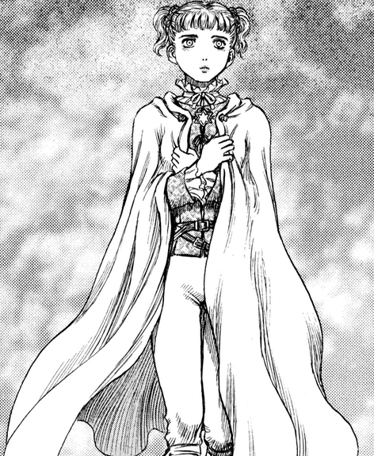

Farnese
About Farnese:
Farnese, in contrast to her brother, was raised in a noble family. She was placed in charge of the Holy See army, due to her noble birth and history of "helping" burn heretics since a young age. Farnese herself has went through alot in her life and only recently seems to have started finding her calling and trying to become a witch
